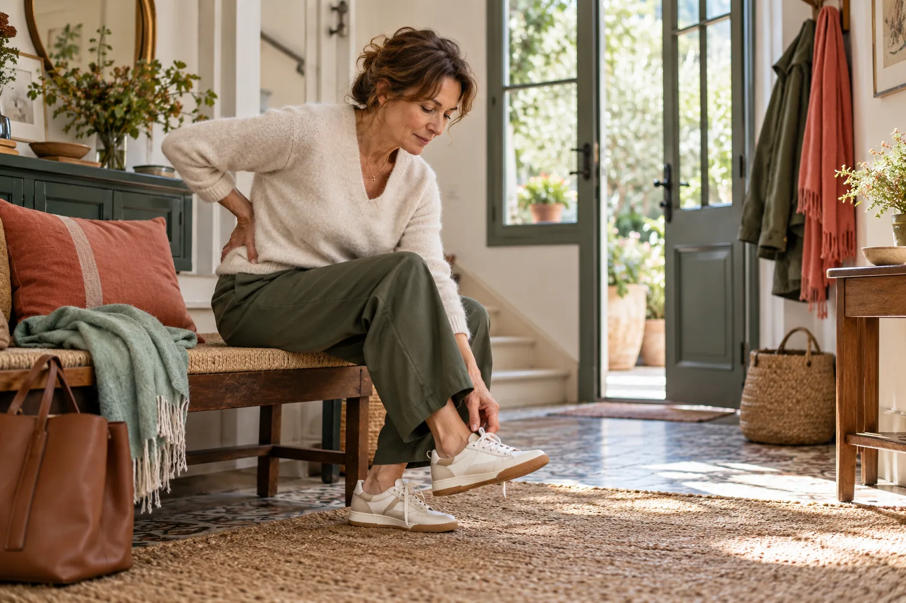
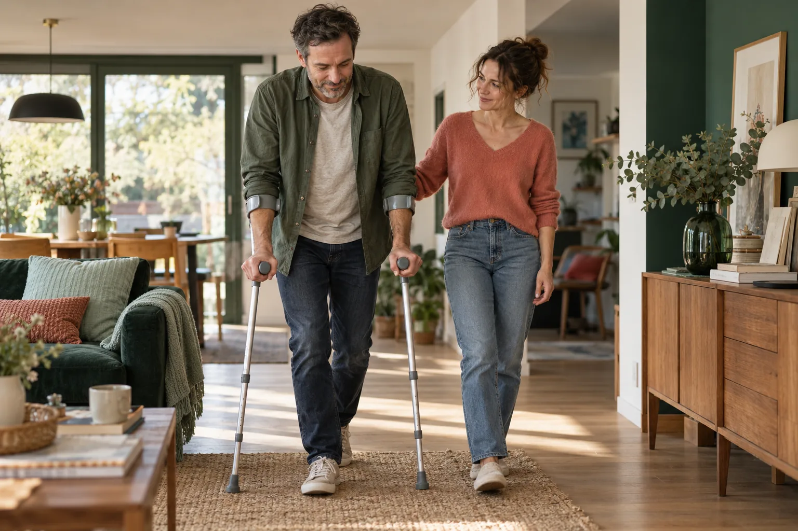

SOS
Lumbago
7 jours pour passer de la panique à un plan d’action progressif.
JOUR 1→JOUR 7
Bouger sans se précipiter
Quand chaque mouvement inquiète, vous n’avez pas besoin d’une promesse miracle. Vous avez besoin de repères clairs : ce que vous pouvez faire aujourd’hui, les signes qui imposent de consulter et comment reprendre progressivement confiance en votre dos.
7 jours pour passer de la panique à un plan d’action progressif.
Le bon réflexe, au bon moment
La plupart des lombalgies sont communes, mais aucune page web ne peut établir votre diagnostic. Notre rôle : vous aider à distinguer l’urgence, la prudence et la reprise progressive.
Commencez par les signes d’alerte et les situations qui justifient de consulter. La sécurité passe avant le programme.
Choisissez des mouvements compatibles avec votre situation. Une gêne légère et une douleur inhabituelle ne racontent pas la même chose.
Reprenez les activités du quotidien par étapes. Le but n’est pas de « réussir » un exercice, mais de retrouver de la capacité.
Bien plus qu’une douleur
Se chausser, travailler, gérer les rendez-vous ou les dépenses : la douleur peut déborder sur chaque geste. Nos supports partent de cette réalité, sans culpabiliser ni dramatiser.

Des adaptations concrètes pour continuer à avancer sans forcer ni tout arrêter.


Préparer sa consultation
Nos fiches vous aident à décrire le début de la douleur, son évolution, ce qui l’aggrave ou l’apaise et les questions que vous voulez poser. Le professionnel garde la main sur l’examen, le diagnostic et la prise en charge.
Gratuit · 12 pages
Les guides

Un plan court pour sortir du flou pendant un épisode aigu et organiser une reprise prudente.
Usage personnel. Ne remplace pas une consultation.

Quatre semaines pour reconstruire régularité, mobilité, force et confiance sans culte de la performance.
Mises à jour incluses pendant 2 ans.
Le guide 7 jours, le programme 28 jours et les supports audio réunis dans un seul parcours.
Meilleur rapport contenu/prix.
Comment ça marche
Chaque support suit la même logique pour vous aider à décider sans vous remplacer, ni remplacer votre professionnel de santé.
Les exercices sont proposés avec des adaptations et des règles d’arrêt. Les visuels définitifs devront être validés par un professionnel de santé.
Repérez d’abord les signes d’alerte et vos limites du jour.
Chaque mouvement propose une version plus douce et une règle d’arrêt.
Notez ce que vous pouvez faire, pas seulement le niveau de douleur.
Avancez, répétez ou demandez conseil selon votre évolution.
Le magazine
Des articles sourcés pour répondre aux questions que l’on se pose vraiment pendant une crise, au réveil ou devant le rayon des matelas.
Les bons repères, les erreurs fréquentes et les situations où il faut consulter sans attendre.
La différence entre une règle générale, une adaptation et un signal d’arrêt.
Fermeté, position, période d’essai : les critères qui comptent plus que le slogan.
Avant tout programme
Cette liste n’est pas un outil de diagnostic. En cas de doute, de douleur très inhabituelle ou d’aggravation, contactez un professionnel de santé. En cas d’urgence, appelez le 15 ou le 112.
Entreprises & collectifs
Des supports de sensibilisation prêts à diffuser pour les équipes sédentaires, les managers et les référents QVCT.
Cette maquette prépare votre demande. Aucun envoi externe n’est effectué.
Questions fréquentes
Non. Ils transmettent des informations générales et des outils d’auto-observation. Ils ne posent pas de diagnostic, ne prescrivent pas de traitement et ne remplacent pas une consultation adaptée à votre situation.
Commencez par la checklist de sécurité. Le guide propose des options courtes et progressives, mais aucune consigne ne doit être forcée. En cas de doute ou d’aggravation, demandez un avis médical.
SOS Lumbago organise les premiers jours. Dos Solide est un parcours de quatre semaines destiné à la reprise progressive après validation que votre situation permet l’activité.
Après paiement, un lien personnel permet de télécharger les PDF, audios et fiches. En production, l’accès sera protégé, limité à l’acheteur et renvoyé automatiquement par e-mail.
Oui, pendant deux ans pour les guides individuels. Une mise à jour majeure donnera lieu à un e-mail et à une nouvelle version dans votre espace.
Les futurs comparatifs pourront contenir des liens affiliés. Ils seront signalés clairement. La rémunération ne modifiera ni le prix payé ni la grille d’évaluation publiée.
Le paiement final devra recueillir votre accord exprès pour l’accès immédiat au contenu numérique et votre renoncement exprès au droit de rétractation, conformément au droit applicable. Une garantie commerciale distincte pourra être proposée.